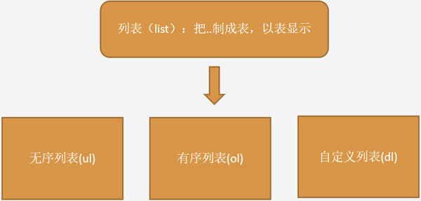
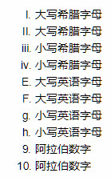

原文出处:本文由博客园博主卷心包菜提供。
原文连接:https://www.cnblogs.com/baojy/p/10941629.html
原文连接:https://www.cnblogs.com/baojy/p/10941629.html

在HTML中，列表有三种，如图分别是有序、无序和自定义列表。上面是我在网络上找到的一张图片很明了就看以看出来，今天要分享的就是其中的无序列表Ul(unordered list)，给大家整理了一下我所知道的。希望能对刚刚入门的不是很懂的人有所帮助。
无序列表
无序列表是一个没有顺序的项目的列表，此列项目使用粗体圆点（典型的小黑圆圈）进行标记。●
无序列表始于 <ul> 标签。每个列表项始于 <li>,
且无序列表ul的各个列表项之间 没有顺序级别之分，是并列的
这是一段ul的基本代码：
<ul>
<li>这是一个无序列表代码</li>
<li>这是一个无序列表代码</li>
</ul>下面就是这段代码在浏览器中显示出来的样子
- 这是一个无序列表代码
- 这是一个无序列表代码
无序列表内部可以使用换行符、段落、图片、链接以及其他列表等等。。
比如：
1 <ul>
2 <li><h3>换行符</h3></li>
3 <li>这是一个<br/>加了换行符<span style="color:#f00"><br/>lt/span>的<br/>
4 无序列表代码</li>
5 <li><h3>段落</h3></li>
6 <li><p>这是一个加了段落标签
7 <span style="color:#f00"><p></span>的<p/>
8 <p>无序列表代码</p>
9 </li>
10 <h3>图片和超链接</h3></li>
11 <li><p>这是一个加了图片和超链接<a href="#"/>
12 <img src="timg.gif"/></a>标签为
13 <span style="color:#f00"><img></span>的<br/>
14 无序列表代码<p/></li>
15 </ul>
这段代码在网页里面打出来的效果就是下面这样的
-
换行符
- 这是一个
加了换行符<br/>的
无序列表代码
-
段落
这是一个加了段落标签<p>的
无序列表代码
-
图片和超链接
这是一个加了图片和超链接 
标签为 <img>的
无序列表代码
可以看到ul里面是可以插入很多别的东西的，其中换行符跟段落能看得出来换行符因为是换行，所以行与行之间的间距是默认的，而插入段落符就变得大了很多。使用的时候有些人会认为这俩作用差不多都能起到“换行”的作用，但是实际的显示效果是有差别的，还需要注意。
无序列表中type属性的常用值有三个，它们呈现的效果也不同，分别是：
小黑点: disc（默认值）；●
方块: square；■
空心圆: circle。○
1 <ul>
2 <li>默认的无序列表</li>
3 <li type="square">添加square属性</li>
4 <li type="circle">添加circle属性</li>
5 <li type="none">取消项目符号</li>
6 <li id="menu"><br/></li>
7 </ul>网页中显示的效果如下
●默认的无序列表
- 添加square属性
○添加circle属性
取消项目符号
最后，大家知道有序列表的type属性是可以改变有序项目符号的，就像这样
1 <ol>
2 <li type="I">大写希腊字母</li>
3 <li type="I">大写希腊字母</li>
4 <li type="i">小写希腊字母</li>
5 <li type="i">小写希腊字母</li>
6 <li type="A">大写英语字母</li>
7 <li type="A">大写英语字母</li>
8 <li type="a">小写英语字母</li>
9 <li type="a">小写英语字母</li>
10 <li type="1">阿拉伯数字</li>
11 <li type="1">阿拉伯数字</li>
12 </ol>但我发现无序列表也可以添加这种属性，让它变得“有序”，
1 <ul>
2 <li type="I">大写希腊字母</li>
3 <li type="I">大写希腊字母</li>
4 <li type="i">小写希腊字母</li>
5 <li type="i">小写希腊字母</li>
6 <li type="A">大写英语字母</li>
7 <li type="A">大写英语字母</li>
8 <li type="a">小写英语字母</li>
9 <li type="a">小写英语字母</li>
10 <li type="1">阿拉伯数字</li>
11 <li type="1">阿拉伯数字</li>
12 </ul>这两段代码的显示结果是一模一样的,都是下面的样子：

但是，并不是所有的浏览器都支持在无序列表中加有序项目符号的，也非常非常不建议这么做，如果真的需要有序符号，最好还是用有序列表来做，我这里只是提一下他可以这么做，非常不建议大家在项目中这么用。
好的，这次的ul就分享完了，希望能对大家有所帮助！